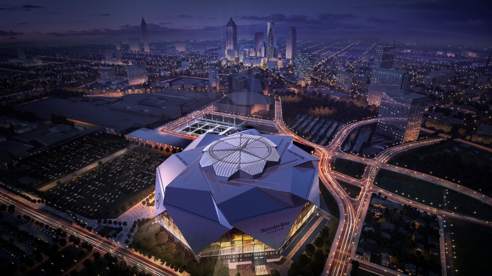
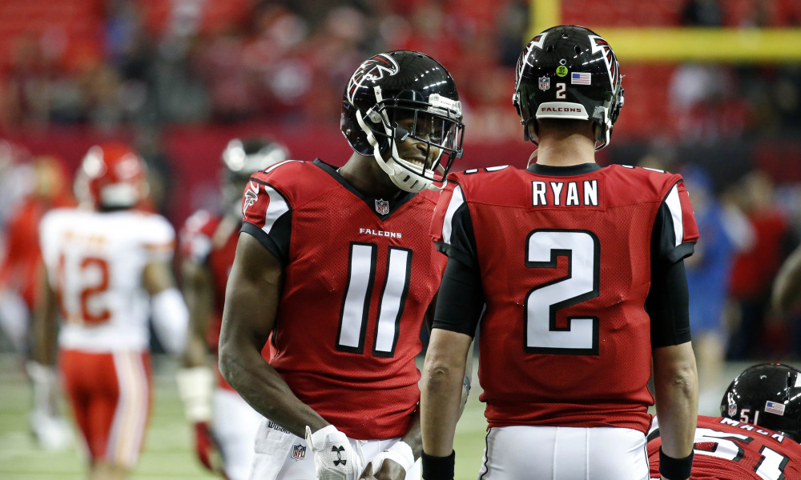
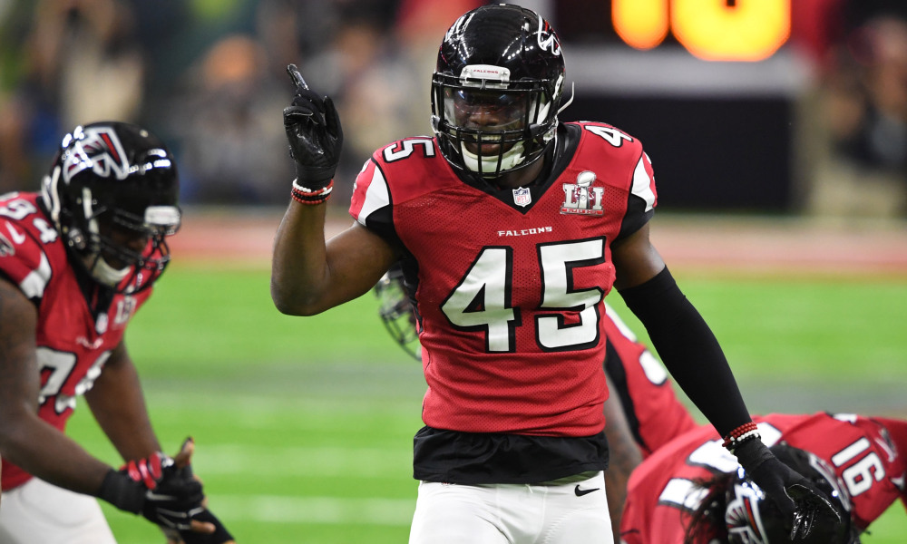

|  |  |  |
Mercedes Benz Stadium is the new home of the Atlanta Falcons. It is a prime time location for the 2016 NFC champions to play for many seasons to come. It features a new roof which opens up from the center in a cirlce to give the stadium an element the Georgia Dome didnt have which is the outdoors. The stadium will also feature some of the cheapest concessions in all of professional sports which was very important to owner Arthur Blank. The stadium seats approximatly 80,000 people and has a video bored that completly surrounds the perimeter of the roof. Fans could hypothetically watch the entire game on the screen. The Falcons new playing field is now one of, if not the best sports venues in the country. The stadium is in the heart of downtown Atlanta right next to the old Gerogia Dome. The city of Atlanta plans on blowing up the Georgia Dome at some time this season. Falcons fans should be very excited for a gameday atmosphere that is both fun and reasonably inexpensive. Eating at a Falcons game is now cheaper than some fast food restaurants and the falcons will field a very competitive team again this year. Check ou the link to great tickets to games and the list of great eating prices below.
The 2016 season was one of the most exciting seasons Falcons fans have ever experianced. The Falcons were nothing short of fantastic and made a Super Bowl appearance for only the second time in franchise history. Matt Ryan led the most dominate offense in the league in route to his first MVP award. The young defense for th Falcons struggled for most of the regular season however played very well during the playoffs. The Falcons playoff run started with a huge win against Seattle in the Divisional round to Advance to the NFC championship game. The Falcons face Aaron Rodgers and the Packers in the final game at the Georgia Dome. The game wasn't even close as the Falcons dominate every phase of the game. Atlanta beat Green Bay 44-21 and went to the Super Bowl. The city was alive and there was no doubt in their minds Atlanta would be the next champions. However Tom Brady and the New England Patriots awaited and they had different plans Houston was the sight of the 2016-2017 Super Bowl and the atmosphere was electric. Two titanic offenses were about to clash in what would be a game for the history books. The Falcons struck first on touchdown run by Devonta Freeman and the scoring didnt stop there. the Falcons jumped to a 28-3 lead thanks to a pick 6 by Robert Alford and a touchdown pass from Matt Ryan to Austin Hooper. This would be the halftime score and the second half would be one Falcons fans will want to forget for a long time. New england came out firing in the second half and scored first. the comeback was on and there was nothing Atlanta could do about it. Brady continued to nickle and dime Atlanta's defense to the point of exhaustion.
The Falcons currently sit thrid in the NFC South division and have a record of 5-4. If the Dirty Birds are going to make the playoffs they are going to need to start hitting their stride soon. I expect that the Falcons will continue to improve offensivly and continue to play well on defense. With plenty of divisional games coming up I can easily see the Falcons making the playoffs and even winning the division. The three key games left are going to be against the Saints and the Panthers. The Falcons face Seattle this Sunday and this game will reveal just what kind of team the Falcons are. It may be too early to call this a must win game but it certainly looks like this Sunday will have massive playoff implications.Falcons fans should remain optimistic for the remainder of the season because the remaining games for the Falcons are against NFC teams. The Falcons have dominated against NFC opponants this season with a record of 4-1. My prediction is that the Falcons will sneak into the playoffs as a five seed. This will allow them to host a playoff game and make a potential run deep into the playoffs. What kind of season the Falcons are going to have will be determined by Matt Ryan and the offense. If he can continue to get more comfortable with Steve Sarkisian's offensive game plan the Falcons can easily make a Super Bowl run. It is an exciting time to be a Falcons fan and fans should continue to have hope for the future as Dan Quinn has this team moving in a great direction. Expect many great Falcons teams in the years to come.